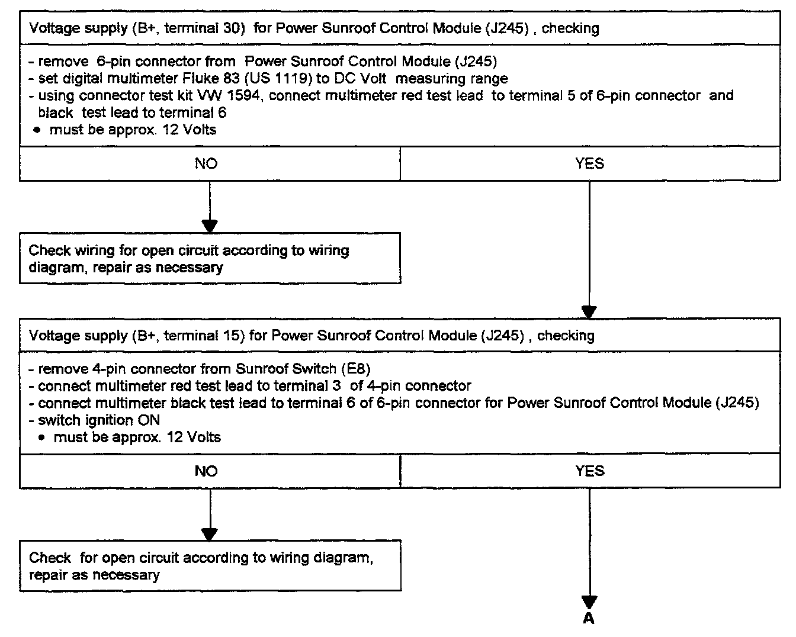
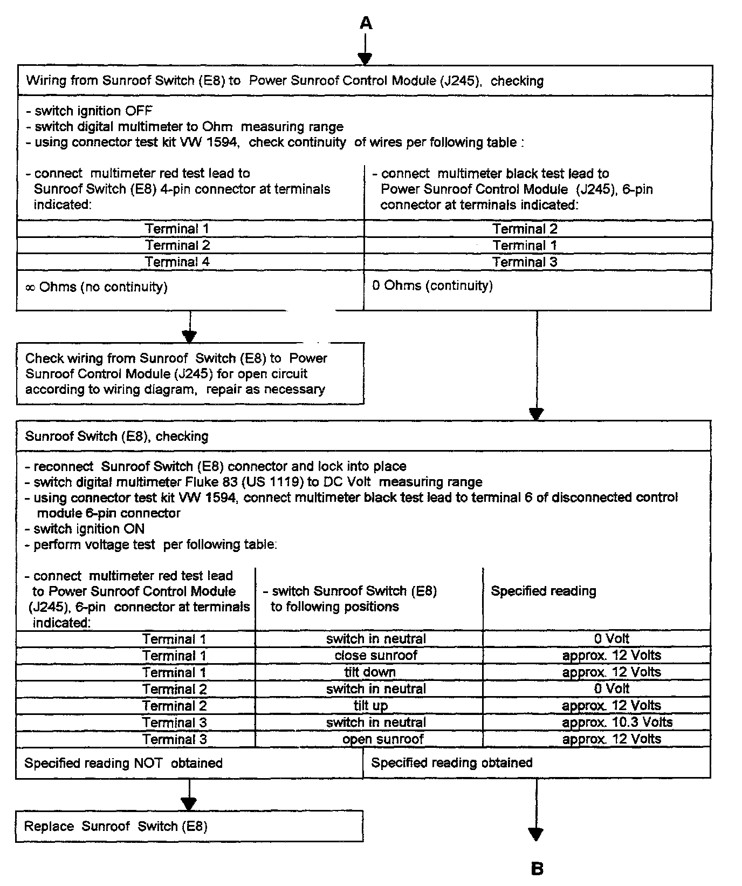
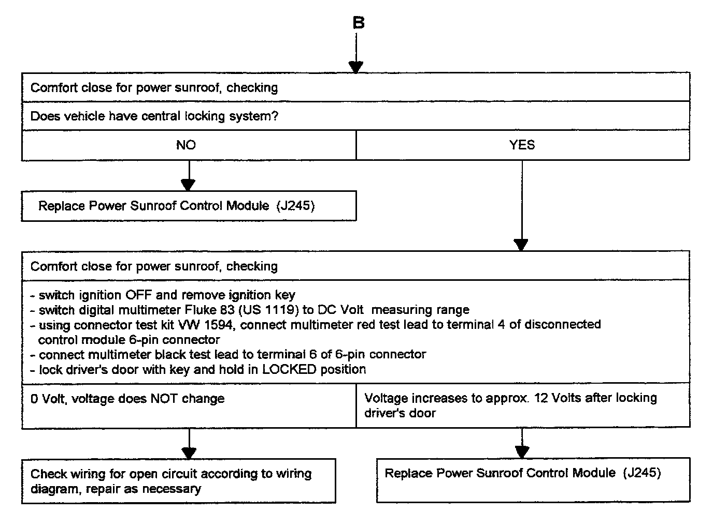

Sunroof / Moonroof: Testing and Inspection



Tools required:
- Multimeter Fluke 83 (US 1119)
- Connector test kit VW 1594
- Applicable wiring diagram
Test Conditions:
- Sliding/tilt sunroof mechanically OK
- Fuse S16 (15A) in fuse/relay panel OK
- Fuse S21 (15A) in fuse/relay panel OK
Troubleshooting preparations:
- Remove 6-pin connector from Power Sunroof Control Module (J245)
- Switch ignition OFF
- Switch all electrical consumers OFF